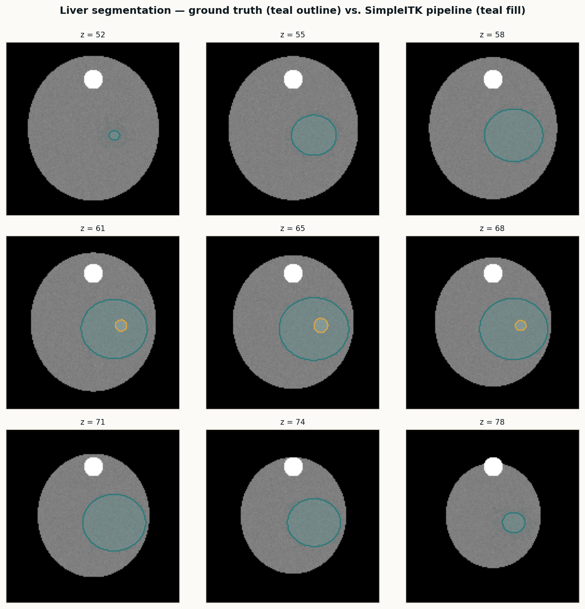

Segmentation · SimpleITK · Slicer SegmentEditor
Multi-organ CT segmentation pipeline
A classical SimpleITK pipeline for body, lungs, bone, and liver — the baseline I run on every new study before handing volumes to nnU-Net or TotalSegmentator. Deterministic, fast, and good enough as a sanity check on AI output.
Read the case study →